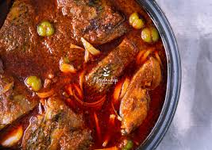

Home
Mfante Mfante

Description
Fante Fante, also known as fisherman’s stew, is a delicious dish from the
central region of Ghana. Because of its wonderful taste, this stew has
become popular throughout the country. It’s frequently served with banku
or kenkey. Enjoy this classic Ghanian fish stew recipe.
Ingredients
-
1 tilapia/ pompano Use any preferred firm white fish of your choice eg
Tilapia, Red snapper 500 g fresh tomatoes
- 1 scotch bonnet pepper
- 1 onion (diced)
- 1 tsp dried thyme
- 2 bay leaves
- 1 tsp dried parsley
- 4 tbsp vegetable oil palm oil
- 1 tbsp garlic (freshly chopped)
- 1 tsp ginger (freshly grated)
Steps
-
Wash and clean the fish thoroughly removing the scales and dirt. Set
aside.
-
Wash the fresh tomatoes, pepper, and onions, and blend using a blender
till a smooth mixture is obtained.
-
Pour the vegetable oil into a clean saucepan and heat for around 2-3
minutes, then add the diced onions, ginger, and garlic and simmer for 2
minutes before adding the thyme, parsley, and bay leaves. Cook for
another 10-15 minutes, or until it begins to bubble.
-
Now add your mixed veggie combination. Cook on medium heat for 10
minutes.
-
Finally, add the tilapia fish and simmer for 5 minutes, stirring once
(to avoid breaking up the fish). Serve your dish with banku, fufu,
and/or kenkey.